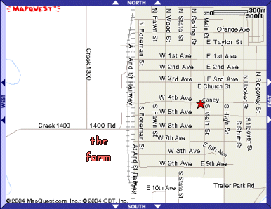 My life took a big change in the spring of 1951 at the end of my fifth grade year. Apparently, I didn't realize, to its fullest extent anyway, that trouble had been brewing in the marriage of my parents over the years. Whatever it was, it was serious enough to result in a divorce. At the court hearing, my father received custody of me and my two brothers. That my memory carries no image of any court hearing may be due to the fact that as soon as school let out, we three boys had been living on the farm of our maternal grandmother, just outside the city limits of Caney. (See map.)
This was a time in my life that I enjoyed very much. My grandmother had inherited a large amount of land and housing property upon the passing of Mr. Stone in 1932. There was the Big House and the Little House inside the city limits, and the large farm outside. The Big House was quite special as it was on the main street of the business district, 4th Avenue. (See star on the map for an approximate position.) It was a large two-storey structure with an ample yard around it, occupying a large portion of the first of about 4 or 5 blocks of regular businesses. To its east was the bus terminal. Across the street to the south were a motel, Surrett's barber shop, and Fuqua's Grocery. Hank Surrett was a good friend to me, always cutting my hair during my time living in this town. I often paid him with a dozen eggs instead of cash money. We did a lot of grocery shopping at Mr. and Mrs. Fuqua's store. Across the street to the west was a gasoline station, and catty-wampus was an automobile dealership. The Little House was just that, a small domicile, located somewhere else in the city. It was rented by a nice lady who took in laundry.
However, it was the farm that I liked best. There were some milk-cows and their calves, and a red poll bull to "service" them. (This was how I got my sex education.) Of course, chickens were always in considerable number. And there were usually five to ten cats running around, depending on how many kittens were born in a litter to the mother cats at any given time. The top cat, if one has to be so named, was a yellow striped female, called Ol' Mother. Grandmother had a small dog, Tippy. When we boys arrived from our year in Canton, we brought Sandy along.
But the main star attraction for me was one old, gentle female horse named Trixie. Trixie and I went way back together. We met each other a long time before. My father often told the story about seeing me, at age 2 years, standing under the belly of this horse, patting her stomach, calmly saying, "Nice Trixie." And Trixie didn't even move a muscle to hurt me.
Most of the cows had names as well. There was Ol' Red, Ol' Jersey, and Ol' Guernsey. And my last calving season that I experienced while living on the farm was made unique by my naming the calves with the Spanish words for the counting numbers. The first calf to be born I called Uno (One). The next was named Dos (Two), and so on. The seeds of my Mexican adventure were being planted already.
The land of the farm was quite large. In addition to the main house, there were several barns - the hay barn, the horse barn, and the red barn -- cow shelters, and granaries for storing cattle feed. There were two main pastures where the cows and Trixie could graze during the day. From my youthful perspective, the Big Pasture was a foreboding territory, at least early on. There was a small forest and dirty river that bounded its furthest extension. Also I was intrigued by the rutted trails that the cows had formed over the years in their daily trips going and coming. I imagined that it held all kinds of deep secrets. As Dorothy might say in her travels through Oz: lions and tigers and bears. With the passage of time, I found it to be a place of high adventure.
Naturally, life is not all fun and games on a farm. The chickens had to be fed and water had to be put in their drinking dishes. 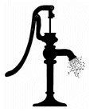Likewise for the cows. There were two large concrete watering troughs and one large circular tank that had to be attended to on a regular basis. One trough and the circular tank were filled by the same hand pump (see image), while the other trough had its own pump, just a smaller version. I well recall making the drudgery of this work a little lighter on a hot summer's day by gazing at the big fluffy white clouds in a blue sky, imagining all sorts of animal shapes or human faces therein. It's surprising how quickly time can fly and hard work can get done when the mind is lost in another activity.
My grandmother often put several goldfish 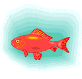in these watering troughs so that they would eat up the green moss that grew inside, due to the cattle carrying plant spores to the water when they came to drink. I was always fascinated by these beautiful fish. I watched them for hours as they swam about. The cows never bothered them. But one time I almost caused a disaster. The day was very hot and the cows were very thirsty. They crowded around the tank outside the red barn, and drank and drank and drank. So much so that there was hardly any water left for the fish to breathe, let alone swim. How long the situation had been going on, I don't recall, but sufficient that some fish were dying already. You can bet that as soon as this was discovered, I was summarily assigned the task to "get pumpin' some water". Which I did with a sense of great dread and urgency. Soon the fish remaining with some life in them were once again swimming well, and the cattle's thirst was being satisfied again. Another lesson learned.
However, the cows did not live by water alone, nor the by the grasses that they grazed on while in the pastures. We had to give them other grains and commercially prepared feeds as well. So with some buckets in hand, we carried these feeds to the troughs intended for this purpose. Of course, my curiosity always got the best of me, as I had to sample the food that I was dishing out to them. My favorite was a commercial product, called Bulky-lass. It had a sweet taste, because I suspect one of its ingredients was molasses. Another item that we fed them was an ordinary looking feed called "bran". It was rather dry to the tongue, to my tongue, that is. Though this may sound gross to some, I hasten to add that I don't recall that I ever became sick doing this. The term "disgusting" I will reserve for the salt blocks. The cattle got their dietary salt intake from licking on large blocks of white salt that were located around the barns and sheds. Ever so often, a cow would pass by one of the blocks, take a few licks as though it were a lollipop, then move on. Later on, I would do the same. Call me crazy, or worse, if you wish, but I never experienced any ill effects from this either.
Eventually, I even learned how to milk the cows too. My grandmother didn't own so many cows that needed milking. Nor was this a dairy farm with many cows and machines to do the work. There were just enough to provide the family with enough fresh milk for our meals. 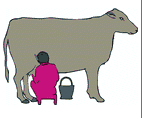The rest was consumed by the calves of each respective cow. It was quite an interesting experience when both I and the calf were competing for the milk simultaneously. The calf would be on the cow's left side while I sat on my stool on the right side. The calf was more efficient at withdrawing the warm, white liquid than I. Soon we were fighting over the teats on my side. Though the calf usually won, I got enough for my breakfast as well. I've often recounted with considerable pride that although I lived practically all of my life in urban settings, obtaining all the necessities of life in stores and supermarkets, there was a time that I had to milk the cows in a cold, winter morning before going to school.
* *** * Taking care of the chickens was another farm chore that became a part of the daily routine of me and my brothers. As the cows gave us milk for our breakfast cereal, likewise the hens provided us with the eggs to fry. And at times, they even gave the full measure of their being, providing us with the necessary ingredient for the All-American classic - fried chicken! Now, gathering eggs from a nest and putting them in a basket is one thing, but it's an entirely different story to take a living, breathing creature and kill it, then dress it before putting it into the frying pan. The first step was to prepare a kettle of boiling hot water on the kitchen stove. The second was the gruesome part, the execution. Whenever my father was around to do this, he preferred to do it by the "wringing of necks" technique. Namely, he would take the chicken's head in his hand, then swing the bird in a large circle, much like a baseball pitcher might do. A quick twist of his hand separated the bird's head from the body, the latter landing on the grassy area in front of him. Of course, for a few short moments, the body jumped all over the place, like a "wild man from Borneo", spewing blood all over the grass. He then tossed the head in the direction of the hungry cats that were surrounding the scene.
I could never bring myself to do things that way. I followed the method used by my grandmother - the guillotine! Well, not quite the French instrument, but the effect was the same. We would place the chicken's head on the edge of a large wooden block that once was a tree stump, with the chicken's feet firmly grasped in our left hands. Then taking a large machete in our right, we would count "1-2-3", and bring down that sharp blade across the victim's neck. Off came the head! It was all done in a split second. Well, usually. I recall a time or two when my aim wasn't so good, requiring an extra blow to finish off the deed. Then I either let the bird dance, or maintained my grip on the feet, letting the blood drain out in one spot. Again the cats got what they came for.
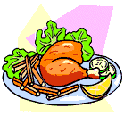 The third step was the "dressing", or perhaps it should be called the "undressing", as it's the part about removing the feathers. The scalding hot water was poured over the now-dead-body of the chicken in order to make the plucking easier. This is the really disgusting part of the whole process. The large feathers weren't so bad, I guess, but when the small, soft feathers next to the body were wet and sticky, and had to be dealt with bare fingers, only the thoughts of a future meal of golden brown fried chicken were what made the task worth all the unpleasantness.
The fourth step - cutting the body up in the pieces appropriate for the skillet and removing the internal organs - came next. We always saved the heart, liver, and gizzard, tossing everything else to the hungry cats. Early on during my two years on the farm, Grandmother did that chore. But eventually I too learned how. And I think I did a pretty good job, too.
* *** * Grandmother also kept me busy tending to a small garden behind the chicken coops. There we grew potatoes, tomatoes, green beans, lettuce, radishes, corn, and of course, weeds! 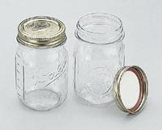I can still see me with my hoe in hand, getting rid of all those darn weeds. Lucky for me that the garden was right beside the tall hay barn and to its east. Therefore, in the late afternoon or early evening, the barn provided a lot of shade from the hot sun. This was the unpleasant part that allowed us to put good, fresh vegetables on our plates for dinner. We grew enough of some things like green beans and tomatoes that we "canned" them for eating in the winter time. By canning, of course I mean putting them in the good ol' Mason jars. (See photo for an example.) We even bought fruits like apples and peaches in large quantities from stores or orchards, and canned them as well. This always meant a lot of work in the kitchen, but our pantry was sure well-stocked.
* *** * Another of the many chores that had to be done was mowing the lawn around the house and the heavy growth of grass between two of the barns. It's true that the cows, calves, and Trixie often made that less work as we often allowed them to graze there. But that wasn't a regular procedure. We used a large lawn mower powered by a gasoline motor. Due to its size and danger, my father normally operated it. However, he wasn't always there, especially during the second year we three boys lived here. Then either Grandmother or I did the mowing. Unfortunately this activity was a prime factor for my taking up a bad habit. Let me try to explain.
The mower, as I just said, had a gasoline motor. This means we had to keep some gasoline on hand on the farm, because gas stations were a long ways away. So we would fill a glass gallon jug with gasoline whenever we were in town, pour a quantity in the little tank on the mower, storing the remainder in a little outhouse that was between the garage and the chicken coops. Though it was a real, working outhouse, we never used it as the main house had fully modern bathroom fixtures; it served as a storehouse for hoes, shovels, other gardening implements, plus the gasoline jug.
Late one summer afternoon when everybody else was somewhere else, I went to the outhouse and took the jug out, sat down on the carpet of dried brown grass, unscrewed the cap, stuck my nose in the opening and sniffed! The sensation wasn't altogether unpleasant, so I sniffed again. I continued for a few more seconds, inhaling the gas fumes that were escaping from the pretty yellow liquid. Soon I began to notice something very strange happening, and it scared me. The blades of grass that were around me began a transformation that I hadn't counted on. Whereas initially they were just randomly arranged, going every-which-way, they now took on a definite order or lacey pattern. As I lifted my nose away from the jar and started breathing normal air, the grass returned to its normal form. Boy, was I relieved! I quickly placed the jug back in the outhouse and closed its door. Whew! No harm had been done.
Then I thought, "That was kinda fun. Wonder what would happen if I did it again?" Whether I indeed tried it again that first day, I don't recall anymore. But that old jug and I became good friends over the passage of time. What I couldn't understand in those days due to my naiveté, was that I was hallucinating to a fairly high degree. I'm sure I would have sworn on a stack of bibles that the grass really had morphed into the beautiful arrangements that my eyes were "seeing".
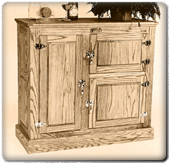 It became even worse a year or so later. Then we began keeping the jug inside an old antique ice box (see sample in picture) that was being stored in the garage. It was in here that the trick with the grass was literally put to shame. Now when I took out my jug of pleasures and began inhaling, I could break the laws of physics, almost. As I sat near the back wall of this crude, wooden 2-car structure, its front began rising, perhaps to a height of 2-3 feet. However, the back remained in contact with the floor, as though fastened by a door hinge. The first time that happened I was terrified. I was sure I was going to destroy it. I jumped up immediately and ran outside. I was greatly relieved to see that nothing was broken, and things were just the way as when I entered a few moments earlier. Needless to say, I performed that trick on numerous occasions thereafter.
My best trick of all involved the garage floor and the change that my infected mind did to it. The floor was just plain dirt, no concrete or bricks, just a thick powdery layer of fine dirt. Now when I sniffed the gas fumes, large sections of that dirt began to arise and morph itself into the most hideous horde of repulsive reptiles you could ever imagine. There were snakes, horned toads, lizards, and probably some never before seen on the face of the earth. And they were all coming to get me! They quickly faded back into the dirt floor the moment I lifted my head from the jug. But no monster movie I ever saw later in my life could compare with what my mind saw in that garage so long ago.
* *** * The farm consisted of more than cows, calves, chickens, cats, a couple of dogs, and an old horse. I would be extremely remiss if I didn't make mention of Ol' Jerry. (By now, the reader surely has noticed a pattern in how our grandmother named things.) But Jerry wasn't an animal, rather he was her brown, 2-door Pontiac automobile. I think its model year was around 1936 to 1938. I took some of my very first driving lessons in this vehicle. I can never forget the big, long gear shift that came up from the floor, the running boards along each side, and the Indian head ornament on the hood. (To see some photos of him on an earlier page, click HERE. He is parked outside the Big House in town.)
One thing that we didn't have on this farm was a tractor. Oh, we needed a tractor, and its related equipment, like hay balers, mowers, and rakes. There were several acres of alfalfa and regular hay that needed to be put up and stored in the barns to feed the livestock during the winters. But my grandmother couldn't manage that degree of hard labor, living alone on this farm. So she preferred to find and hire people who had their own equipment to come and put up our hay.
That was indeed big time stuff for me. I loved to watch the men driving their tractors around and around the fields with their sickle mower cutting down the bright green alfalfa sprigs. Alfalfa needs to be dried before it is baled, so it was left on the ground overnight to dry. The following day the rake attachment replaced the mower on the men's tractor, and they formed long rolled-up rows of the plant all around the field. Soon came the haybaler itself, sweeping up the rows of the alfalfa, like a hungry animal swallowing its food. After a few moments inside the bowels of this machine, a large rectangular chunk of hay spewed out from the rear end, all tied up neatly with twine or wire. 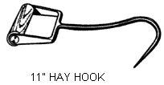Then the really hard work commenced - lifting the heavy bales onto a flatbed truck and taking them to the barns. Everyone who did this had a hay hook to make the grasping easier. (See image for a sample.) However, I did do my own part. With my own hook, I would load one bale in my red wagon and take it to the barn myself. Lucky for me, the alfalfa field was just a few yards away from the barn. Plus I was just doing my part to have fun.
The fun later turned to be real work when I had to feed the cattle in the winter time. Then I had to load my wagon with one, maybe two, bales of hay and pull them to the feed lot where many hungry creatures were waiting for their breakfast or supper. And not once, but two or three times. I became quite adept at handling my hook, not just for lifting the bales but also for breaking the wire or twine that encircled them. Once the bale was opened, I had to fight the cows while I tossed big portions of hay in their direction. They were too hungry to wait to be served.
* *** * When it came to punishing any misbehavior committed by me or my brothers, our grandmother didn't believe in the old fashioned, little wooden paddle, judiciously applied to our dorsal posteriors. Neither did my father actually. His instrument of choice was his belt that he wore around his trousers. After adequately forewarning us to straighten up and behave ourselves, which we sometimes failed to do, he merely stood up, removed the belt, and folded it in half. With the belt held in his right hand and the guilty party firmly grasped in his left, he swiftly brought it into contact two or three times with the rear end of whomever. Oh, the sting that that could bring! Believe me, our behavior was quite modified thereafter. (Before I go any further, I hasten to add that this was not the sort of child abuse that is so often the case in our society today. We were never physically injured, nor struck anywhere other than what was just described. Our father loved us deeply, though at that instant it might have been difficult to convince us of the fact.)
Grandmother's method was only slightly different. Instead of a belt, she used her famous peach-tree hickory. A small peach tree grew between the garage and the outhouse, next to the spot where so many chickens lost their lives. It never bore any fruit that I ever saw during my two years, but it definitely served as the source of numerous switches with which her style of punishment was administered. When the time came, she would go to the tree, cut off a slender, flexible branch 12-18 inches in length. Then she would strip off the leaves to cut down on the air resistance, improving the stinging effect as the blows were being executed. I even vaguely recall that she instructed us on occasion to go to the tree and prepare our own personal peach tree hickory. I sometimes wonder if preparing one's own switch would qualify as cruel and unusual punishment.
* *** * At times Mother Nature provided other ways to make our lives less than pleasant around the farm. Two particular items readily come to mind, one plant, the other animal. There was a weed that flourished abundantly all over the place called the cockleburr. It produced a seed-like pod about the size of the tip of a person's finger on its stems. (See illustration at left.) Due to the little hooks that covered its exterior, one might think it was the inspiration for the inventor of Velcro. Those hooks allowed the pod to grab the fur of a passing cow, dog, or horse. Oh, such a mess it was to remove those burrs from the tails of the animals -- not to mention my socks! I always felt sorry for a cow whose tail was overloaded by these pesky old burrs. At least I could take my socks off to get relief.
The animal that most made my life so uncomfortable was the chigger, something so small that I never really saw one of them. 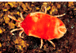It would take 20 adult chiggers lined up just to make an inch. (See illustration.) But it's the baby chigger that is dangerous. That's the stage of its life in which it bites its victims, like me and my brothers, as we were playing in the lawn around the house. One writer in the internet put it best when he said, "Chiggers first show up as annoying red bumps. An itch begins. It grows. More hard red welts surface. From your feet and ankles upward, and especially at those tender locations your mother told not to scratch in public, a maddening itch takes hold." And he is so right. That's one part of my life on the farm I'd prefer not to re-live.
There was one plant that gave me a lot of pleasure, the milkweed. Strange though the name may sound, this plant did produce a sticky, white fluid when the stems or leaves would be cut.. That was not the most fascinating part, however. At one stage in its life cycle, it produces a large pod full of seeds. Then at the peak of its maturity, the pod pops open, revealing a very beautiful phenomenon. One web source describes it this way: "Inside is a closely packed roll of several hundred flat brown seeds arranged like scales on a fish, each with a folded parachute of fine silky fibers. Gradually, these parachutes open and the seeds are carried away on the fall winds." Click HERE to see excellent examples of this. I confess that I assisted many seeds to escape their prison pods by striking them with a stick or kicking with my foot. I really loved to see those little "guys" float away on a breeze.
* *** *
Not all of my memories of life on the farm were as rustic as those described so far. Many things come to mind about things that I did inside the house as well. Since Grandmother didn't have a radio, much less a TV in those days, and frowned on going to the movies, I had to entertain myself with more elemental methods. Being an avid reader all my life, I was therefore attracted to two specific items: (1) the rather extensive collection of Reader's Digest magazines that my grandmother had gathered over many years and stored in a bookcase in the living room; and (2) a 20-volume set of The Book of Knowledge. I spent many hours going through the RD's, reading the articles and jokes, and studying the vocabulary quizzes therein. And my favorite part of the BK's was the section dealing with famous fairy tales, each volume containing a few of the best-loved stories of this genre. I credit these two things as much as anything with giving me a good education. And the best part was that there were no tests to take afterwards.
There were two specific books in the house that also affected the course of my life. Mention has already been made (in Chapter 1) about the Spanish textbook that my mother had studied from in her high school days several years earlier. In view of where I am now living, that book had a very positive affect. Paradoxically, it was a math book that I encountered which had a negative effect on my thinking. All that I remember about it was that it had something to do about algebra (whatever that was!). It showed such things as "a + b" and "x + y". How silly, I thought. How could you ever add letters? You're supposed to add numbers, not letters. Hence, I threw it aside as the most ridiculous thing imaginable. It would be another 3-4 years later until I learned what it all meant, and I've been happily adding letters for the rest of my life. I guess that book was just a pothole in my mathematical highway. *sigh*
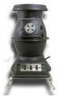 Somewhere around the middle of the two years that my brothers and I lived on the farm, Grandmother decided to remodel the house in a major way. The two bedrooms on the west side were combined to form a large living room. A new front door was needed, so it was constructed. Next to the west wall an old fashioned wood-burning heating stove was installed, very similar to the one illustrated at the right. This meant another chore to be done, namely bringing firewood into the house from the woodpile. The warmth that a stove like this provides on a cold, winter morning has to be personally experienced in order to be fully appreciated.
In order to make a new bedroom for us boys, the original front porch was then enclosed. There were large windows all around, thus lots of light could enter. Gary and I often spent time there playing our favorite card game, Authors. I'm sure that this game helped me know more about some great works of literature, or at least the authors' names and titles of their books. It has come in handy even today as I watch my favorite game show on television, Jeopardy!
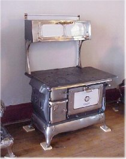 Meanwhile, back in the kitchen, there was more wood to bring in. Although our grandmother had a modern style kitchen stove there for cooking (whether it was gas or electric I don't recall anymore), she also had a large antique stove, similar to the one in the illustration at the left. It was made of cast iron. When it was in use, preparing breakfast, it made the kitchen all toasty-warm, again a good place to warm one's hands after milking the cows in winter. It was also a good place to burn one's hands as I found out one day while walking around the house with my eyes closed. With my arms extended in front of me, hands hanging down with my palms facing me, I collided with the hot, black monster. Oh, the pain I felt on the back of my left hand was excruciating! I'm sure I screamed bloody murder. For a long time thereafter, I carried a large rectangular brown spot on that hand, as a visual reminder of my foolish game.
To be continued...
| Comments? Send e-mail. | Back to top | Go back to Contents |